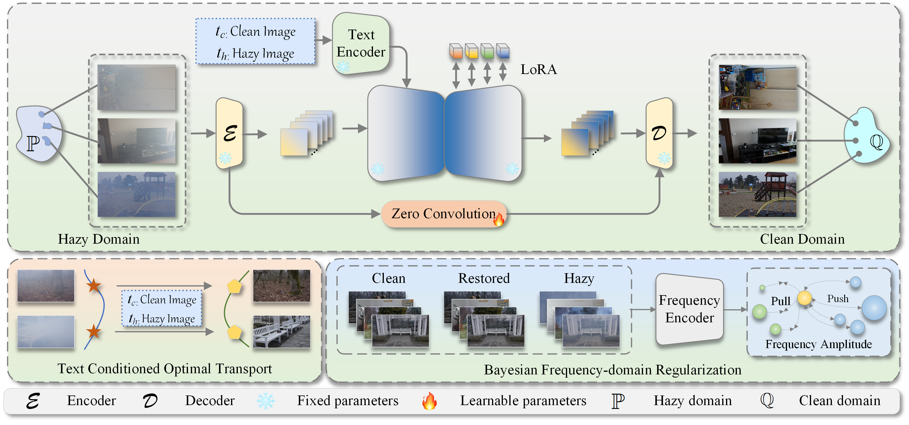
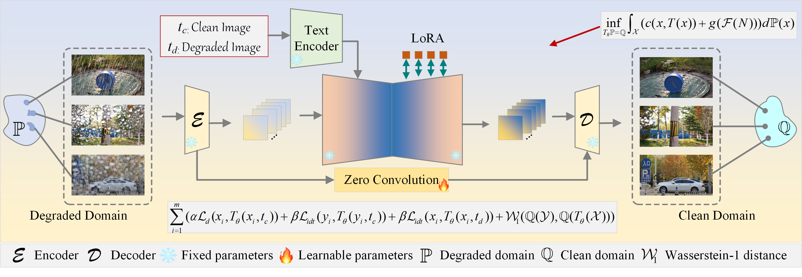
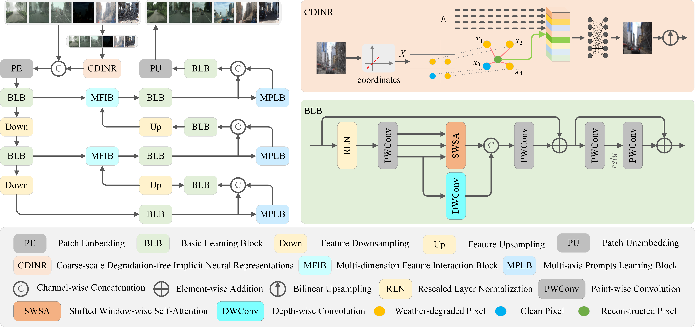
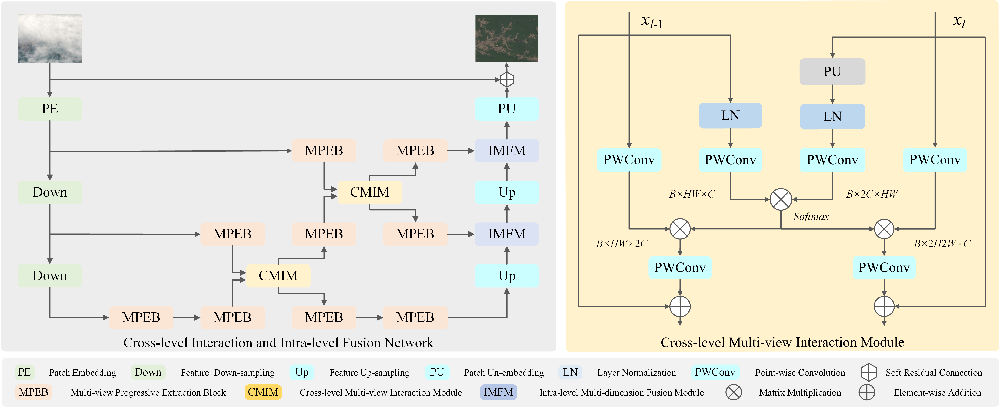
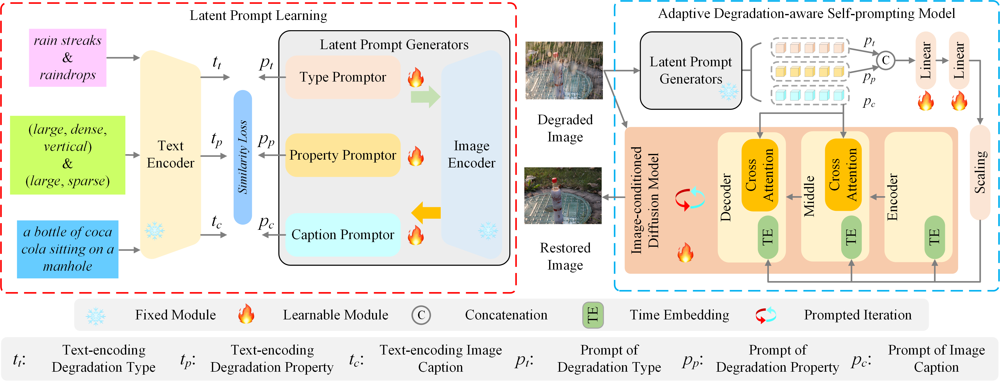
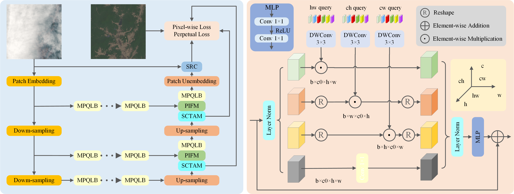
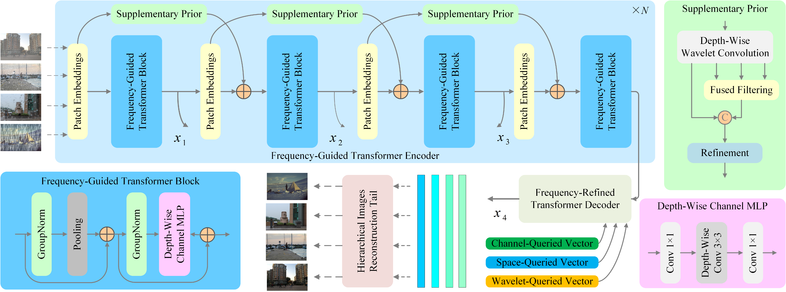

When Optimal Transport Meets Photo-realistic Image Dehazing with Unpaired Training
IEEE Transactions on Neural Networks and Learning Systems (TNNLS), 2026.
I am currently an Associate Professor in the School of Information Engineering, Chang'an University, where I also received Ph.D. degree in 2026, supervised by Prof. Tao Gao (高涛). I worked as a visiting scholar at the School of Computing, Australian National University in 2023, where I conducted research with Senior Lecturer Jing Zhang (张静).
My research interests include computer vision, general image restoration, remote sensing image processing, unpaired learning, and multi-modal learning.

When Optimal Transport Meets Photo-realistic Image Dehazing with Unpaired Training
IEEE Transactions on Neural Networks and Learning Systems (TNNLS), 2026.

IEEE Transactions on Multimedia (TMM), 2026.

AAAI Conference on Artificial Intelligence (AAAI), 2025.

Cross-Level Interaction and Intralevel Fusion Network for Remote Sensing Image Dehazing
IEEE Transactions on Geoscience and Remote Sensing (TGRS), 2025.

All-in-one Weather-degraded Image Restoration via Adaptive Degradation-aware Self-prompting Model
IEEE Transactions on Multimedia (TMM), 2025.

Unpaired Photo-realistic Image Deraining with Energy-informed Diffusion Model
ACM International Conference on Multimedia (ACM MM Oral), 2024.

Encoder-free Multiaxis Physics-aware Fusion Network for Remote Sensing Image Dehazing
IEEE Transactions on Geoscience and Remote Sensing (TGRS), 2023.

Frequency-oriented Efficient Transformer for All-in-one Weather-degraded Image Restoration
IEEE Transactions on Circuits and Systems for Video Technology (TCSVT), 2023.